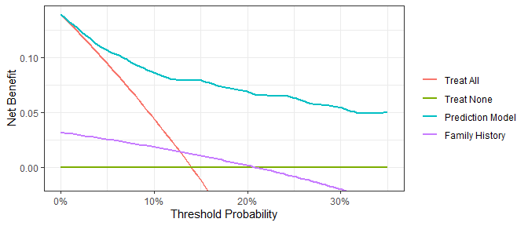
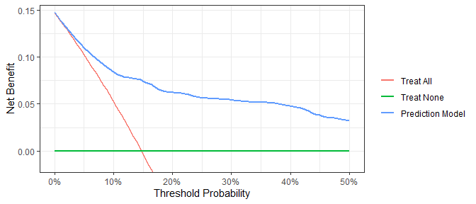

Diagnostic and prognostic models are typically evaluated with measures of accuracy that do not address clinical consequences. Decision-analytic techniques allow assessment of clinical outcomes but often require collection of additional information and may be cumbersome to apply to models that yield a continuous result. Decision curve analysis is a method for evaluating and comparing prediction models that incorporates clinical consequences, requires only the data set on which the models are tested, and can be applied to models that have either continuous or dichotomous results.
The dcurves package includes methods for evaluating predictive models with binary (Vickers and Elkin 2006) and time-to-event endpoints (Vickers et al. 2008). The package also includes methods for model evaluation in the case-control setting (Pfeiffer and Gail 2020).
Installation
You can install dcurves from GitHub with:
# install.packages("devtools")
devtools::install_github("ddsjoberg/dcurves")Examples
Assess models predicting binary endpoints.
library(dcurves)
dca(cancer ~ cancerpredmarker + famhistory,
data = df_binary,
thresholds = seq(0, 0.35, by = 0.01),
label = list(cancerpredmarker = "Prediction Model",
famhistory = "Family History")) %>%
plot(smooth = TRUE)
Time-to-event or survival endpoints
dca(Surv(ttcancer, cancer) ~ cancerpredmarker,
data = df_surv,
time = 1,
thresholds = seq(0, 0.50, by = 0.01),
label = list(cancerpredmarker = "Prediction Model")) %>%
plot(smooth = TRUE)
Create a customized DCA figure by first printing the ggplot code. Copy and modify the ggplot code as needed.
gg_dca <-
dca(cancer ~ cancerpredmarker,
data = df_binary,
thresholds = seq(0, 0.35, by = 0.01),
label = list(cancerpredmarker = "Prediction Model")) %>%
plot(smooth = TRUE, show_ggplot_code = TRUE)
#> # ggplot2 code to create DCA figure -------------------------------
#> as_tibble(x) %>%
#> dplyr::filter(!is.na(net_benefit)) %>%
#> ggplot(aes(x = threshold, y = net_benefit, color = label)) +
#> stat_smooth(method = "loess", se = FALSE, formula = "y ~ x",
#> span = 0.2) +
#> coord_cartesian(ylim = c(-0.014, 0.14)) +
#> scale_x_continuous(labels = scales::percent_format(accuracy = 1)) +
#> labs(x = "Threshold Probability", y = "Net Benefit", color = "") +
#> theme_bw()References
Pfeiffer, Ruth M, and Mitchell H Gail. (2020) “Estimating the Decision Curve and Its Precision from Three Study Designs.” Biometrical Journal 62 (3): 764–76.
Vickers, Andrew J, Angel M Cronin, Elena B Elkin, and Mithat Gonen. (2008)“Extensions to Decision Curve Analysis, a Novel Method for Evaluating Diagnostic Tests, Prediction Models and Molecular Markers.” BMC Medical Informatics and Decision Making 8 (1): 1–17.
Vickers, Andrew J, and Elena B Elkin. (2006) “Decision Curve Analysis: A Novel Method for Evaluating Prediction Models.” Medical Decision Making 26 (6): 565–74.